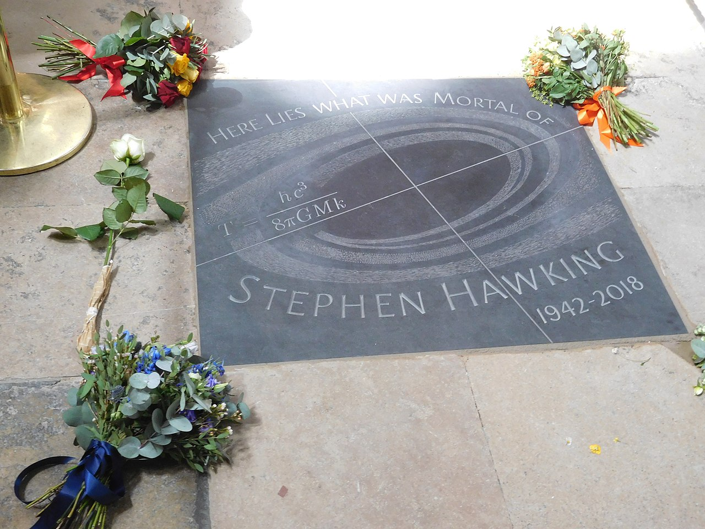

Стивен Хокинг родился 8 января 1942 года в Оксфорде, куда переехали из Лондона его родители, опасаясь бомбёжек немецкой авиации. Отец — Фрэнк Хокинг, работавший исследователем в медицинском центре в Хампстеде. Мать, Изабел Хокинг, работала там же секретарём. В семье кроме Стивена воспитывались две младшие сестры (Филиппа и Мэри) и усыновлённый брат Эдвард.
В 1962 году Стивен окончил Оксфордский университет (степень B.A.), а в 1966 году в колледже Тринити-холл Кембриджского университета получил степень Ph.D., защитив диссертацию «Свойства расширяющихся вселенных». С 1965 Хокинг в Кембриджском университете работал исследователем в колледже Гонвил и Киз, в 1968—1972 годах — в Институте теоретической астрономии, в 1972—1973 — в Институте астрономии, в 1973—1975 — на кафедре прикладной математики и теоретической физики, в 1975—1977 преподавал теорию гравитации, в 1977—1979 — профессор гравитационной физики, с 1979 — профессор математики. В 1974—1975 был стипендиатом в Калифорнийском технологическом институте. Сам про себя Хокинг говорил, что, будучи профессором математики, он никогда не получал никакого математического образования со времён средней школы. В первый год своего преподавания в Оксфорде Хокинг читал учебник, опережая собственных студентов на две недели.
В 1974 году Хокинг стал членом Лондонского королевского общества, в 1979 стал Лукасовским профессором Кембриджского университета. Эту должность он занимал до 2009 года. В 1973 году посещал СССР, во время пребывания в Москве обсуждал проблемы чёрных дыр с советскими учёными Яковом Зельдовичем и Алексеем Старобинским. В 1981 году Хокинг участвовал в международном семинаре по квантовой теории гравитации, проходившем в Москве.
Уже в начале 1960-х у Хокинга стали проявляться признаки бокового амиотрофического склероза, которые впоследствии привели к параличу. После диагностики заболевания в 1963 году врачи считали, что жить ему осталось лишь два с половиной года, однако болезнь прогрессировала не так быстро, и пользоваться коляской он начал только в конце 1960-х годов. В 1985 году Стивен Хокинг тяжело заболел, у него было воспаление лёгких. После серии операций ему была проведена трахеостомия, и Хокинг утратил способность говорить. Друзья-механики модифицировали инвалидное кресло Стивена, установив на нём бортовой компьютер с синтезатором речи, которым Хокинг управлял сперва с помощью указательного пальца правой руки, а впоследствии — мимической мышцей щеки, напротив которой ему закрепили датчик. Голос, которым общался Хокинг, имел американский акцент и на момент его смерти уже много лет не создавался для других подобных устройств; Хокинг отказывался его менять, поскольку давно привык воспринимать как свой собственный (впоследствии он даже защитил его авторскими правами). Несмотря на тяжёлую болезнь, он вёл активную жизнь. В 2007 году он совершил полёт в невесомости на самолёте компании Zero Gravity, а на 2009 год был запланирован полёт в космос, который не состоялся.
В 1965 году женился на Джейн Уайлд, позднее у них родились сын Роберт (р. 1967), дочь Люси (р. 1970) и сын Тимоти (р. 1979). Отношения Стивена с Джейн постепенно ухудшались, и в 1990 году они стали жить раздельно. После развода с Джейн в 1995 году Хокинг женился на своей сиделке, Элайн Мэйсон, с которой прожил 11 лет. В начале октября 2006 года они также развелись.
Хокинг мирно скончался в возрасте 76 лет в своём доме в Кембридже в ночь на 14 марта 2018 года после осложнений, вызванных амиотрофическим боковым склерозом. Его семья выступила с заявлением о своей скорби. Похоронен 15 марта 2018 года после кремации в Вестминстерском аббатстве в Лондоне.
Плита на могиле Стивена Хокинга в Вестминстерском аббатстве